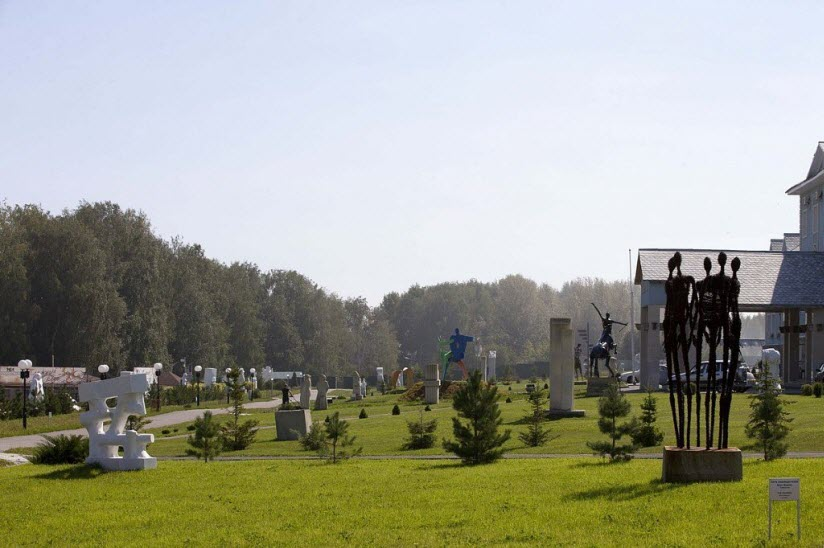
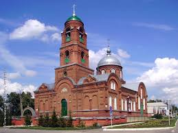

Вблизи села Рамзай Мокшанского района расположена самая необычная достопримечательность региона – скульптурный парк под открытым небом. Удивительный парк был организован в 2008 году во время проведения Международного скульптурного симпозиума. В «Легенде» установлено 275 великолепных скульптур, выполненных из бронзы, мрамора, дерева, гранита и других материалов. Все творения уникальны и эффектны: человеческие фигуры, огромные лица, мифические существа и даже гигантский красный комар. Каждая статуя – произведение искусства. Над созданием прекрасных экспонатов трудились 178 мастеров из 59 стран. В 2013 году парк вышел в финал конкурса российских достопримечательностей.
АдрессСкульптурный парк «Легенда»

Город

На месте рабочего поселка Мокшан в 17 веке возвышался крепкий деревянный форпост. Храбрые воины защищали границы государства от набегов кочевников. В настоящий момент от средневековой крепости остались фрагменты заградительного вала. В 1979 году на валу была установлена точная копия старинной сторожевой башни. Строительство деревянного сооружения приурочили к 300-летию основания Мокшана.
Адресс